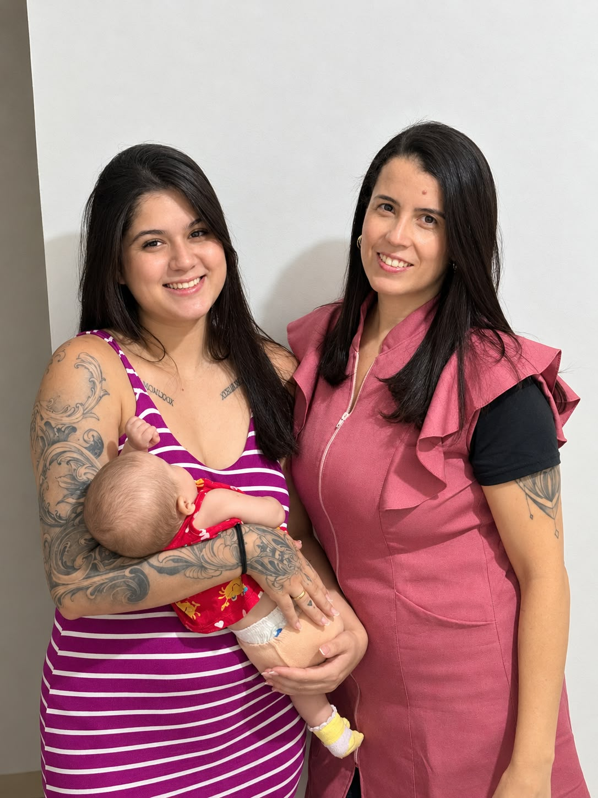

Ninare
Sua rede de apoio da gestação ao pós-parto.
A Ninare nasceu com o propósito de oferecer cuidados especializados, humanizados e acolhedores, respeitando as necessidades de cada família. Oferecemos suporte com atenção, sensibilidade e segurança, para que mães, bebês e famílias se sintam cuidados e amparados em cada etapa dessa jornada.
Acolhimento
para
toda familia
Cuidado
com quem mais importa
Confiança
na hora que você mais precisa

Larissa França
Por trás da Ninare,
Prazer, sou a Larissa França!
Sou técnica de enfermagem, com especialização em Neonatologia e Pediatria, doula, educadora perinatal e
consultora de amamentação, com atuação também em cuidados especializados com recém-nascidos.
Sou esposa e mãe de um menino de 5 anos, e a maternidade faz parte da minha maneira de compreender os
desafios, as dúvidas e as transformações que acompanham a chegada de um filho.
Minha dedicação ao cuidado materno-infantil vem da vontade de unir conhecimento técnico, acolhimento e
orientação segura, respeitando a história e as necessidades de cada família. Acredito que nenhuma mãe
precisa atravessar essa fase sozinha e que ter apoio, informação e alguém em quem confiar pode fazer toda
a diferença.
É assim que procuro exercer meu trabalho: com responsabilidade, empatia e respeito, oferecendo um cuidado
próximo e individualizado em cada etapa dessa jornada.
Cuidado com Propósito
Atenção, empatia e respeito às necessidades de cada família.
Relações de Confiança
Diálogo transparente e compromisso com um atendimento responsável e acolhedor.
Encontre o cuidado que você precisa
Conheça as modalidades de apoio preparadas para atender às necessidades de assistência e suporte da sua família com excelência.
Doula e Educadora Perinatal
Apoio especializado durante a gestação, parto e pós-parto, com presença acolhedora, informações confiáveis e suporte emocional para você e sua família.
Cuidados infantis
Suporte para o dia a dia com o bebê, incluindo cuidados com o sono, alimentação, higiene, bem-estar e estímulo para o desenvolvimento nos primeiros meses de vida.
Auxilio na amamentação
Suporte profissional e acolhedor para auxiliar nas primeiras semanas de amamentação, ajudando você a encontrar conforto, segurança e confiança nesse momento tão especial.
Cursos oferecidos
Primeiros cuidados com RN.
Primeiros socorros 0 a 1 ano.
Amamentação.
Por que escolher a Ninare?
Construímos uma metodologia de cuidado pensada para valorizar cada detalhe da rotina e proporcionar paz de espírito a quem amamos.
Profissionais preparadas
Equipe orientada com rigor técnico, postura acolhedora e capacidade de escuta em todas as etapas do atendimento.
Atendimento personalizado
Plano de assistência planejado individualmente, respeitando preferências, hábitos familiares e horários.
Segurança e confiança
Supervisão contínua, compromisso com a pontualidade e integridade em cada interação com a família.
Cuidado humanizado
Tratamento pautado no afeto, na empatia genuína e na consideração calorosa em todos os momentos.
Cuidar pode ser mais simples
Um fluxo transparente e descomplicado para você iniciar o atendimento adequado com tranquilidade.
Entre em contato
Envie uma mensagem pelo WhatsApp ou preencha o formulário em nosso site para iniciarmos a conversa.
Conte o que você precisa
Compartilhe a rotina, os horários e os detalhes específicos necessários para o cuidado adequado.
Encontre o cuidado adequado
Apresentamos o direcionamento e a assistência ideal sob medida para a realidade da sua família.
Comece seu atendimento
Inicie o acompanhamento com acompanhamento próximo, segurança e total suporte da Ninare.
Quem conhece, confia
O reconhecimento de quem experimenta nosso compromisso com o cuidado diário e o afeto.
"A Ninare nos trouxe tranquilidade no momento em que mais precisávamos. O cuidado, a pontualidade e o carinho com minha mãe foram impecáveis."
Família Ribeiro
Brasília - DF
"Profissionais preparadas e muito atenciosas. A assistência humanizada da Ninare fez toda a diferença na harmonia da nossa rotina."
Mariana Fonseca
Família assistida
"Superaram todas as nossas expectativas. Transparência, carinho genuíno e muita competência técnica em cada visita."
Carlos Eduardo
Família assistida
Precisa de cuidado e assistência?
Nossa equipe está à disposição para ouvir suas necessidades e apresentar a melhor forma de cuidado para quem você ama. Fale conosco agora mesmo.
Perguntas frequentes
Esclareça as principais dúvidas sobre os atendimentos e serviços da Ninare.
Estamos prontos para ouvir você
Fique à vontade para nos chamar em qualquer um dos meios oficiais de atendimento da Ninare:
+55 61 9432-1882
@ninareoficial
oficialninare@gmail.com